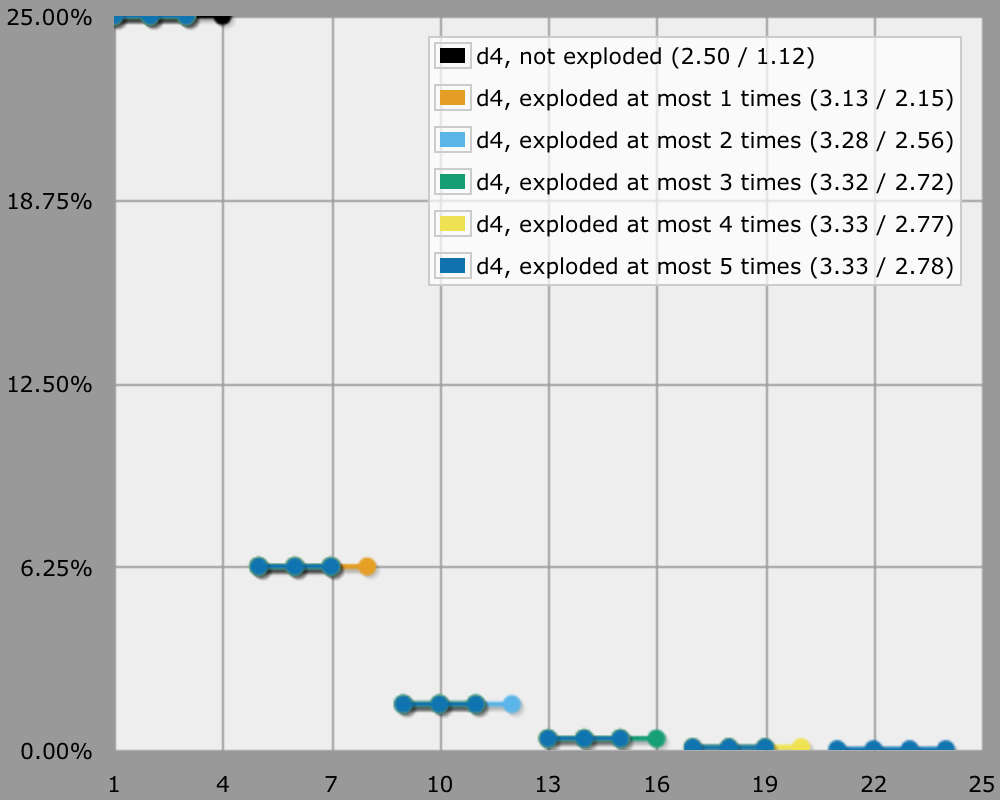
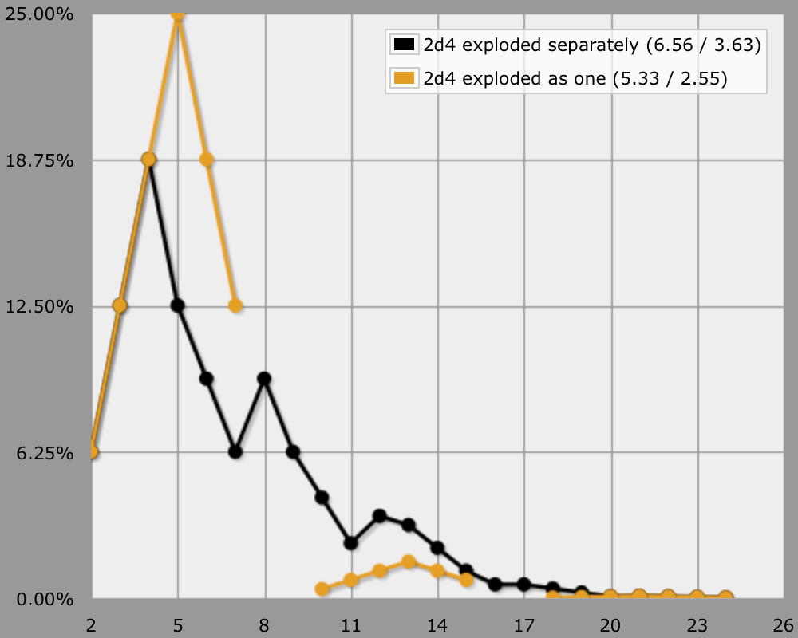
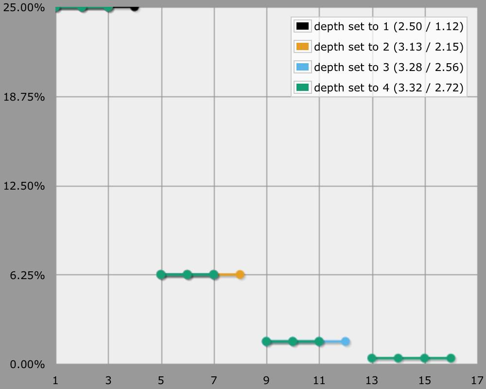
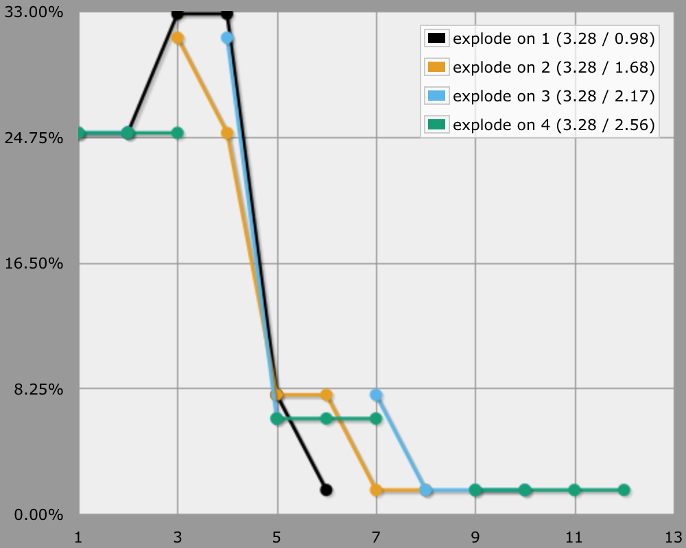
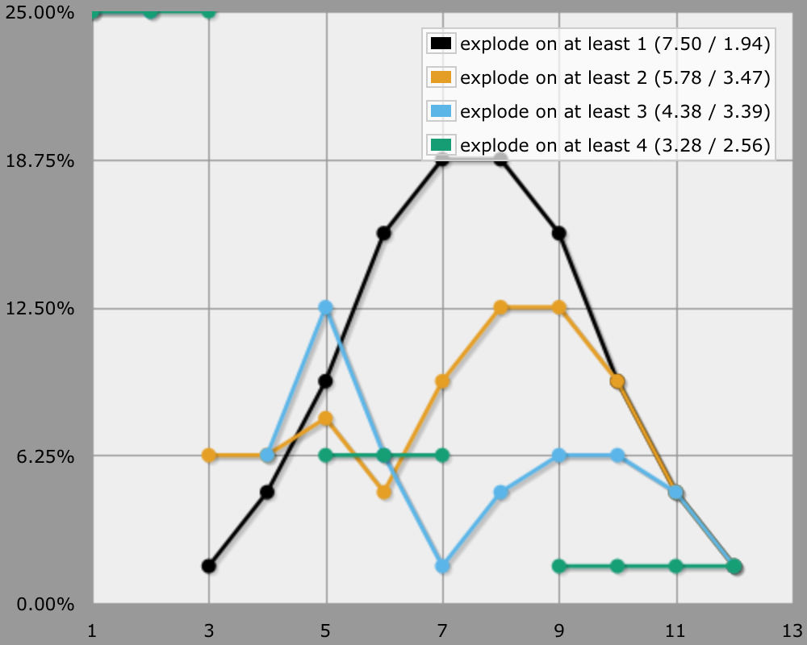
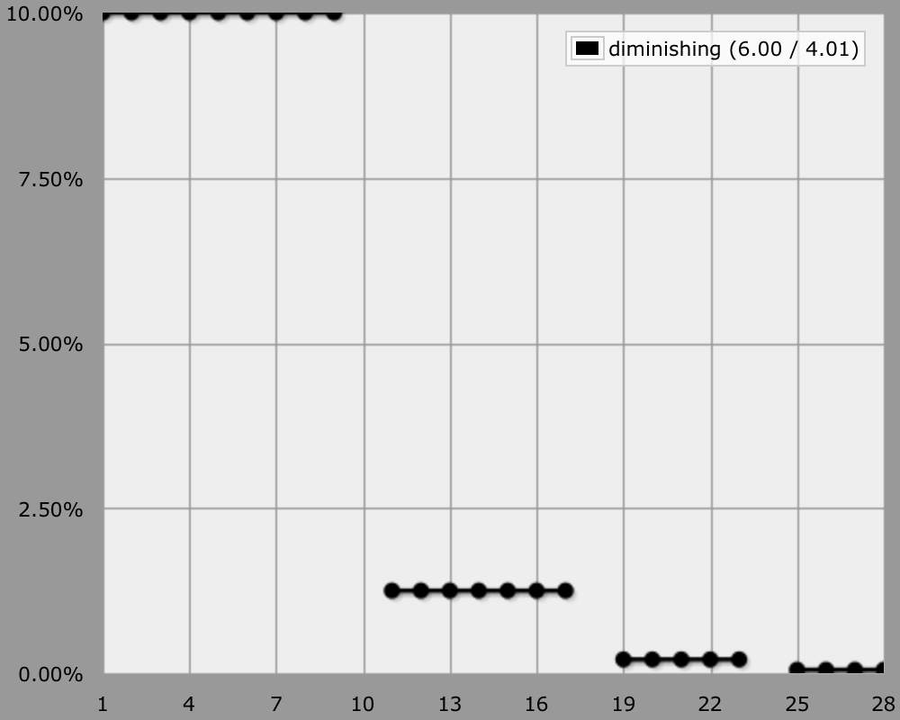

Exploding Dice
Making Your Own Explosions
Exploding dice are fun! The traditional exploding die is rolled again whenever its highest value is rolled. The rolled values are summed, so you have a small chance of getting very high results.
The humble d4 is very prone to explosions. Just try it! It's not unthinkable to get an explosion sequence like 4 + 4 + 3 after about a dozen tries.
Theoretically, a die can keep exploding forever. In practice, that doesn't really happen. Even if you keep rolling 4s on that d4, after several explosions you'll likely won't bother anymore, the result so far is good enough. Likewise, AnyDice has to stop at some point too.
output d4 named "d4, not exploded"
loop DEPTH over {1..5} {
set "explode depth" to DEPTH
output [explode d4] named "d4, exploded at most [DEPTH] times"
}

Combining Exploding Dice
Rolling multiple exploding dice together is simply a matter of exploding each individually, then summing their final values. Using AnyDice, you can accomplish this in various ways, which might not be totally obvious at first.
output [explode d4] + [explode d4] named "calculated twice" EXPLODED: [explode d4] output 2d EXPLODED named "in two steps" output 2d [explode d4] named "in one go"
Note that this is quite different from rolling the dice together, then exploding based on their sum, as if they were a single die.
output [explode 2d4] named "2d4 exploded as one"

Your Own Exploding Function
The predefined explode DIE function is handy for dealing with the default case, but there are many ways to explode a die. If we want to explode using different criteria, then we'll have to create our own function.
When writing our own function, we don't need to bother with being generic, so we'll just go ahead and hardcode the dice into our function. Let's start with copying the default explosion behavior for d4.
function: explode ROLLEDVALUE:n {
if ROLLEDVALUE = 4 { result: 4 + [explode d4] }
result: ROLLEDVALUE
}
output [explode d4] named "explode on 4"
The :n behind ROLLEDVALUE in the function definition indicates that we want this value to be a number. So whenever we feed it a die, the function will be called for each individually rolled value, not the entire die at once.
Also note that this function doesn't set a limit for the number of explosions. This is handled implicitly via the maximum function depth setting. Whenever this depth is reached, further function calls will always result in the empty die, which is usually interpreted as empty, nothing, or zero. By default the maximum function depth is 10, so at most ten d4 will be rolled for a single exploding die.
function: explode N:n {
if N = 4 { result: 4 + [explode d4] }
result: N
\ N is shorter to write than ROLLEDVALUE \
}
loop DEPTH over {1..4} {
set "maximum function depth" to DEPTH
output [explode d4] named "depth set to [DEPTH]"
}

Magic Number
Suppose we would like to explode on a 1 instead of on a 4. This is an easy change to make.
function: explode N:n {
if N = 1 { result: 1 + [explode d4] }
result: N
}
In fact, if we'd like to get a little more generic, we could provide our magic number as a function parameter.
function: explode N:n on MAGICNUMBER:n {
if N = MAGICNUMBER {
result: N + [explode d4 on MAGICNUMBER]
}
result: N
}
set "maximum function depth" to 3
loop X over {1..4} {
output [explode d4 on X] named "explode on [X]"
}

Alternatively, we could define the magic number as a variable before using the function.
function: explode N:n {
if N = MAGICNUMBER { result: N + [explode d4] }
result: N
}
set "maximum function depth" to 3
loop MAGICNUMBER over {1..4} {
output [explode d4] named "explode on [MAGICNUMBER]"
}
Threshold
Another variant is to explode using a threshold instead of an exact match.
function: explode N:n {
if N >= THRESHOLD { result: N + [explode d4] }
result: N
}
set "maximum function depth" to 3
loop THRESHOLD over {1..4} {
output [explode d4] named "explode on at least [THRESHOLD]"
}

Diminishing
To wrap up with a more exotic variant, let's consider an explosion with diminishing returns. The idea is that when we roll the maximum value, we explode with a smaller die. In this case, we start with a d10, explode with a d8, then a d6, and finish with a d4 that doesn't explode anymore.
function: explode N:n on SIZE:n {
if N = SIZE & SIZE > 4 {
result: N + [explode d(SIZE - 2) on SIZE - 2]
}
result: N
}
output [explode d10 on 10] named "diminishing"
